Deeper
Body Awareness
From daily movement to nightly recharge, get a complete picture of your well-being right on your wrist with seamless, zero-burden monitoring.
1.47″
AMOLED Display
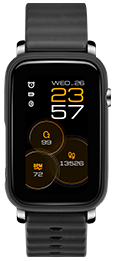
2-week
Battery Life In power saving mode
GPS
Enhance your
safety every day
27g
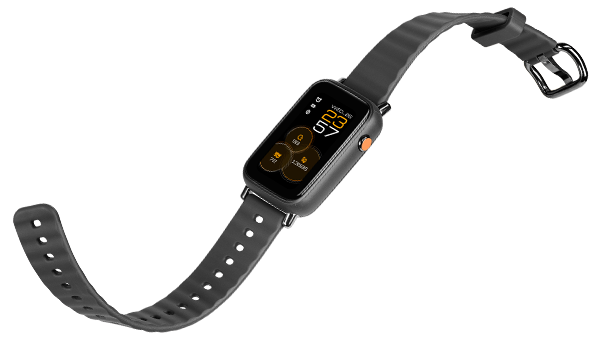
ECG + PPG
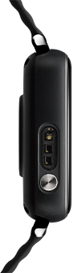
One Touch
Measurement
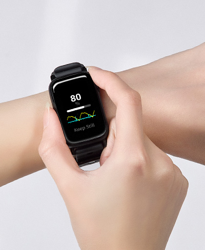
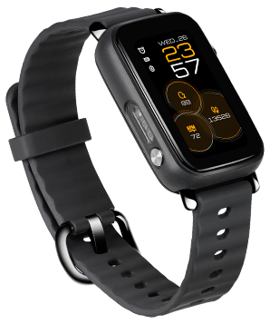
Supported SaMD
Valuable Insights
to your overall well-being
SpO2 Heart Rate Steps & Calories
5 ATM
Ready for everyday life
Skin Temperature
& Respiration Rate
Track subtle shifts. Breathe with ease
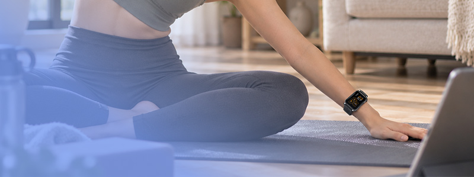
ASUS HealthConnect App
Your Overall Health,
At a Glance
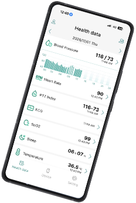
*Blood pressure function availability may vary by region.
*ECG availability may vary by region.
From daily movement to nightly recharge, get a complete picture of your well-being right on your wrist with seamless, zero-burden monitoring.
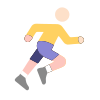
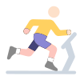
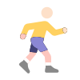
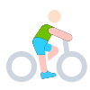
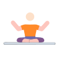
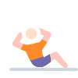
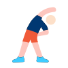
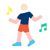
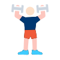
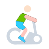
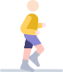
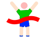
*Meets the requirements of ISO 22810:2010 standard 5 ATM waterproof rating, suitable for daily life and shallow water areas activities like swimming in pools or beaches. The waterproof function is not permanently effective and may decrease due to daily wear and sweat.
Using continuous data from your ASUS VivoWatch, ASUS HealthAI Genie analyzes your readings against clinical research to deliver personalized, real-time insights. Each insight adapts to your lifestyle, offering actionable tips, tailored workouts, and chat feedback, helping you make meaningful health improvements every day.
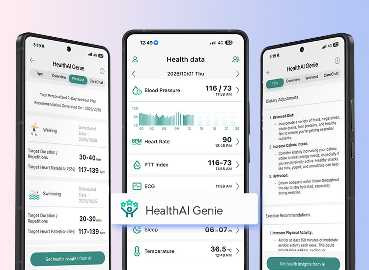
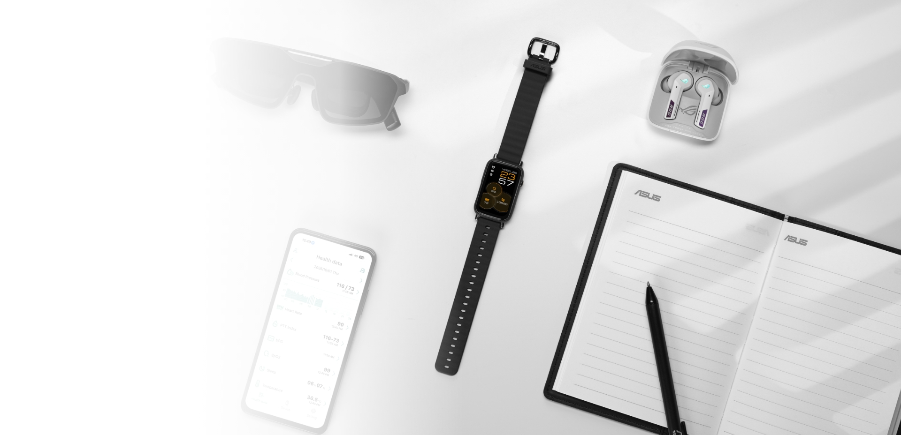